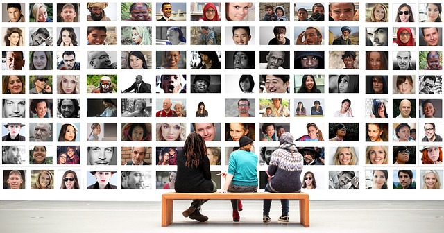

Globalización y culturas locales
¿Cómo y dónde inicia este viaje?
Nos encanta que hayas decidido participar en esta aventura viajera, tu rol al igual que el de un expedicionista es adentrarte en tierras lejanas (¡y también otras que son más cercanas a ti!), para descubrir los tesoros ocultos de la condición humana. Necesitas para ello, toda tu curiosidad y también un profundo respeto por la diversidad que caracteriza a lo que nos rodea, incluidas las tradiciones, creencias, prácticas cotidianas y saberes populares y ancestrales para transformarte, a la manera en la que los antropólogos lo hacen, en un verdadero embajador de la humanidad, un navegante en las aguas desconocidas de la cultura, cuya brújula moral es el respeto por la diversidad y cuya recompensa es el enriquecimiento del conocimiento humano y la promoción de la armonía en un mundo diverso y complejo.
Las reglas del juego
A partir de ahora, encontrarás letras de dos colores diferentes: las que se encuentran en color naranja son para que identifiques explicaciones e indicaciones que son necesarias para lograr una mayor comprensión de los temas que se abordan en esta unidad; las letras que aparecen en color negro son parte de la historia en la que te vas a sumergir. Ahora sí, ¡damos inicio!
Un mundo globalizado

Imagen de geralt. Pixabay
¿Alguna vez has escuchado la expresión “vivimos en un mundo globalizado”? ¿Te has puesto a pensar qué significa? Piensa un momento en los programas de televisión o páginas de internet que utilizas para entretenerte, ¿de dónde son esos programas o páginas?, seguramente una parte importante de ellos pertenecen a otros estados de México, incluso a países diversos. Tal vez te hayas dado cuenta que cada vez sabes un poco más acerca de las formas de vida y lugares distintos al tuyo, incluso es probable que lo que has visto te haya motivado a probar alguna comida que no es de tu país o a hacer alguna actividad que no es usual en tu lugar de origen.
Esto no sólo te afecta a ti, seguramente te has dado cuenta que cada vez más utilizamos palabras que provienen de otros idiomas. ¿Qué palabras, frases o expresiones utilizan tú, tus amigos o tu familia que no provienen de tu lengua materna? Pues bien, todo esto forma parte de la globalización, para aprender qué es y cómo afecta a nuestra cultura, te invitamos a ver el siguiente video en el que XXX te habla sobre la globalización. Presta mucha atención y toma las notas necesarias para que afiances nuevos conocimientos.
Globalización y culturas locales.

La globalización en mi entorno
¿Qué te ha parecido el video? Estamos seguros que hay muchos más ejemplos que has podido notar a tu alrededor sobre la globalización. Así que, ya tenemos todo listo, es el momento de participar en el foro “La globalización en mi entorno”, en este espacio tus ideas cobran vida y son esenciales para enriquecer la conversación. ¿Todo listo para ser parte de esto? ¡Únete y prepárate para descubrir las distintas formas en que nos impacta la globalización!
¿Qué te pareció esta charla entre compañeros? ¿Qué aprendiste y qué cosas nuevas descubriste? Anota todo para que se quede contigo y forme parte de ti. ¿De acuerdo?
Ahora es momento de revisar detalladamente algunos elementos de las culturas locales y cómo han sido influenciadas por la globalización.